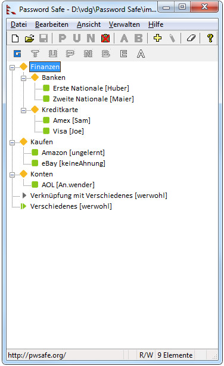

| Password Safe | |
|
Über wie viele Passwörter und Benutzernamen müssen Sie die Übersicht behalten? Entweder ist die Antwort eins oder hunderte. Password Safe erlaubt Ihnen eine verschlüsselte Liste Ihrer Passwörter sicher und einfach zu realisieren. Ein einziges Master-Passwort entsichert sie alle für Ihre Verwendung. Sicherheit fängt beim Benutzer an. Das Aufbewahren von Passwortlisten, die entweder auf Papier geschrieben oder in einem Textdokument auf der Benutzeroberfläche (Bildschirm) zu sehen sind, ist unsicher. Es kann einfach von neugierigen Blicken (sowohl Cyberbasiert als auch menschlich) eingesehen werden. Das ständige Verwenden desselben Passwortes in einem großen Bereich von Systemen und Internetseiten führt zu einem Alptraum, wenn jemand das Passwort herausgefunden hat. 'Die' haben dann alle Ihre Passwörter und haben damit Zugriff auf sämtliche Teile Ihres Lebens (System, Email, Verkauf, Finanzen, Arbeit, ...). Password Safe gestattet Ihnen die Verwaltung der alten Passwörter und bietet ebenso eine schnelle wie einfache Methode neue zu erstellen, abzuspeichern, zu organisieren und abzufragen. Sie können komplizierte neue Passwörter verwenden, die Sie mit den selbstbestimmten Passwortrichtlinien erzeugen. Einmal abgespeichert, sind Benutzername und Passwort mit ein paar Klicks da. Mit Password Safe können Sie Ihre Passwörter mit eigenen Verweisen selber anpassen — zum Beispiel, nach Benutzer ID, Kategorie, Internetseite oder Standort. Sie können wählen, ob Sie alle Ihre Passwörter in einer einzigen Datenbank ablegen, oder ob Sie für unterschiedliche Zwecke verschiedene Datenbanken verwenden (zum Beispiel eine für Arbeit und eine für Zuhause). Und mit der intuitiven Schnittstelle sind Sie innerhalb von ein paar Minuten voll dabei. |
 |